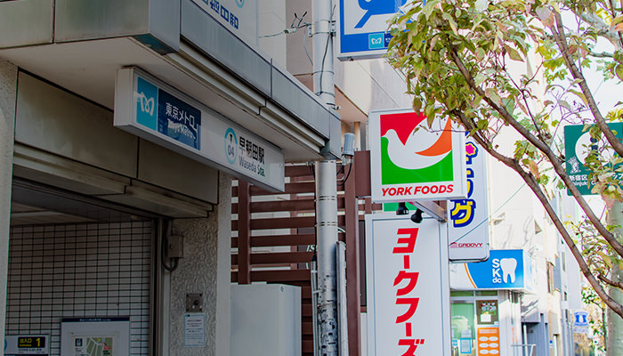
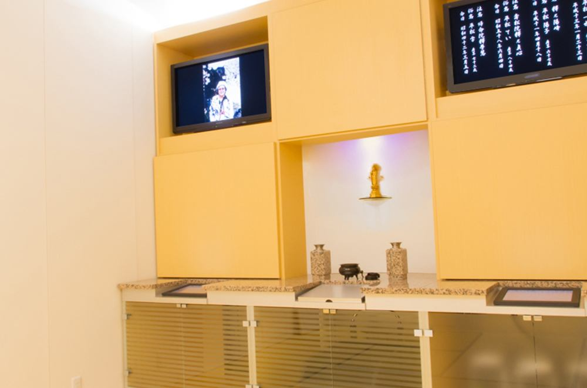
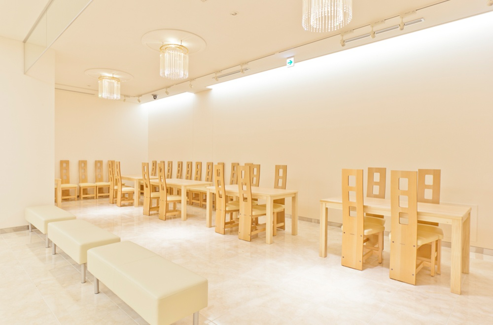
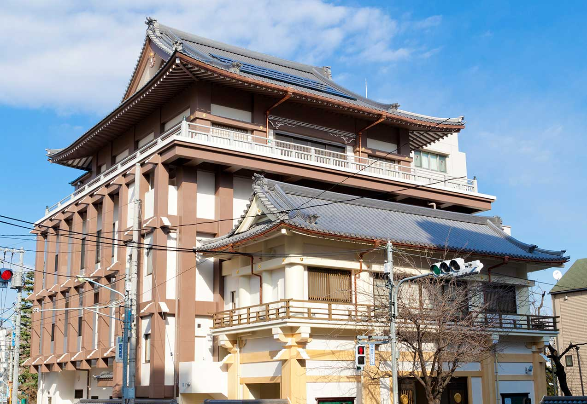

駅徒歩2分、都心でいつでも会える
東京メトロ東西線「早稲田」駅から約100m、徒歩2分。 思い立った時にいつでもお参りいただけます。周辺は大学や公園に囲まれた、落ち着いた文教エリアです。
WORRIES
宗派不問・無宗教の方も
ご利用いただけるプランをご用意しています。
REASONS

東京メトロ東西線「早稲田」駅から約100m、徒歩2分。 思い立った時にいつでもお参りいただけます。周辺は大学や公園に囲まれた、落ち着いた文教エリアです。

参拝室はプライベートな完全個室。大型モニターで思い出の写真や音楽を流しながら、 ご家族だけの空間でゆっくり故人との時間をお過ごしいただけます。 ご要望があれば、ご遺骨を参拝室まで手でお運びします。

販売会社を通さず、運営元が直接ご案内。中間マージンがないから実現できた納得の価格です。 見学後の営業電話・メールも一切ありません。
FACILITY
※お盆・お彼岸などの混雑時は、参拝室をオープンブースにしてご案内します。
PLAN
宗派を問わず、どなたでもお選びいただける契約形式をご用意しています。
年間志納金：13,000円／年＋お志
年間納付志納金：11,900円〜／年
上記のほか「檀家プラン」もございます。納骨時・名義変更時などの費用は別途必要です。
費用と契約条件を詳しく見る
COMPARISON
ご家族が大切にしたいことを、一つずつ確認してみてください。
| 項目 | 確認しておきたいこと | 早稲田納骨堂 |
|---|---|---|
| 家族用プランの費用 | 家族で利用するときの初期費用と、毎年かかる費用は？ | 家代々で使えるプランが78万円 一般プラン・家代々の箱。信徒プランは58万円から。年間費用等は別途必要です。 |
| 宗派のしばり | 檀家になる必要や、葬儀・法要についての条件は？ | 宗派不問・無宗教の方も対象のプランを明記 檀家・信徒・一般から選べて、ニーズに合ったプランを選びやすい |
| 参拝空間 | 家族だけで落ち着いてお参りできる？ | 個室でゆっくりお参り 大型モニターで写真や音楽を流しながら、家族だけで静かにお参りできる。ご要望に応じて、ご遺骨を参拝室まで手でお運びします。 |
| アクセス | 長く通うことを考えて、駅からの道のりや駐車場は？ | 東京メトロ「早稲田」駅 徒歩2分（駅から約100m） 大学や公園がある落ち着いた文教エリア。専用駐車場完備（最大12台） |
| 見学後の対応 | 見学した後も、自分たちのペースで検討できる？ | 営業電話・メール一切なし 販売会社ではなく運営元が直接対応。ご家族のペースでじっくり検討できる |
TEMPLE

早稲田納骨堂は、収益目的の販売会社などを通さず、歴史ある龍善寺が直接募集・運営しております。
そのため、適正な価格で永代にわたる手厚いご供養をお約束いたします。お寺が直接管理しているからこその「安心感」が、多くの方に選ばれている理由です。
FAQ
見学予約・資料請求いずれも無料です。
見学後の営業電話・メールは
一切いたしません。